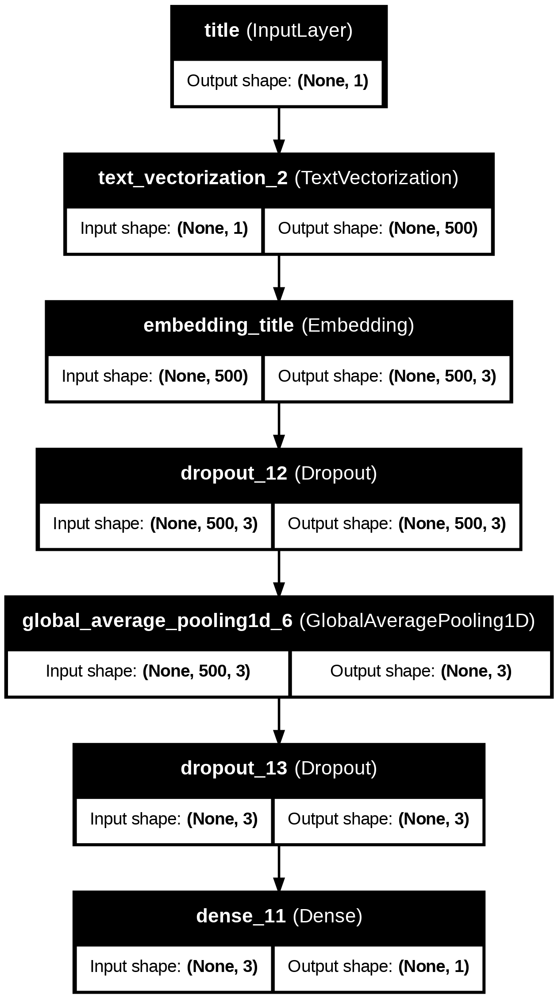
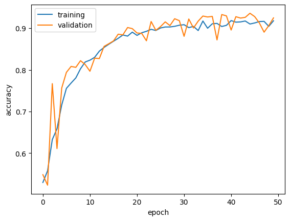
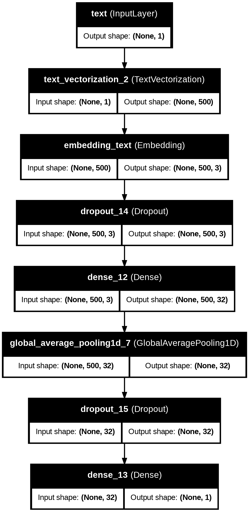
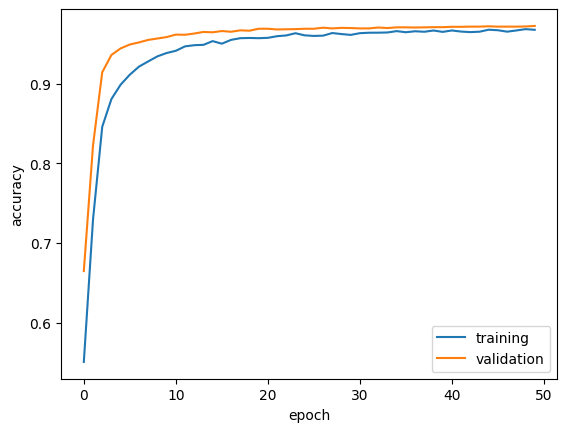
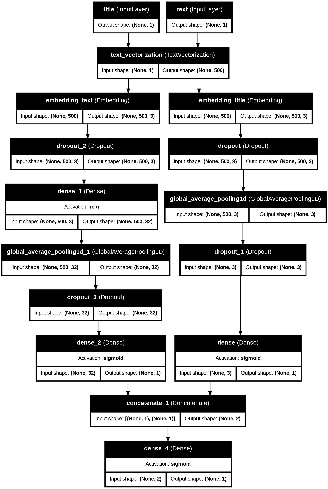
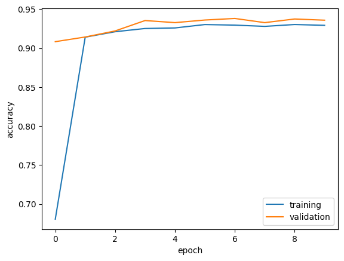
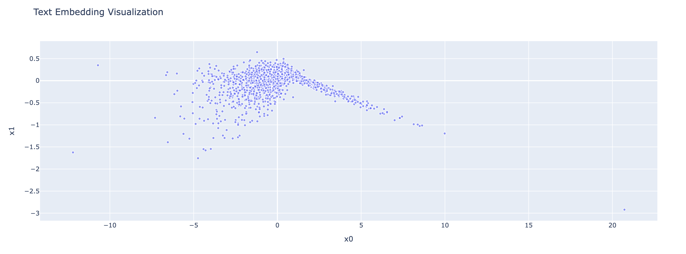

import os
os.environ["KERAS_BACKEND"] = "tensorflow"Introduction
We live in a digital age flooded with information, where distinguishing between fact and fiction has become increasingly challenging. Among the rising concerns is misinformation, or “fake news,” a phenomenon that undermines trust and credibility in our sources. To combat fake news, we can leverage the power of machine learning and robust tools. In this tutorial, you’ll gain hands-on experience developing classifiers with Keras to identify and categorize news articles.
In deep learning, Keras serves as a high-level API that can run on top of various backend engines. In this tutorial, we explicitly set the backend using TensorFlow:
Now, let’s load the packages required for the model-building process. I’ll provide additional explanations along the way for some of the packages I’ve chosen.
import re
import keras
import string
import numpy as np
import pandas as pd
import tensorflow as tf
from keras import utils
from keras import layers
from keras import losses
from nltk import download
import plotly.express as px
import matplotlib.pyplot as plt
from nltk.corpus import stopwords
from sklearn.decomposition import PCA
from keras.layers import TextVectorization
from tensorflow.keras.optimizers import AdamIn the upcoming text processing steps, we’ll need to remove stopwords. To prepare for this, we’ll download the stopwords from nltk.corpus package as part of the setup process:
# Download stopwords
download('stopwords')[nltk_data] Downloading package stopwords to /root/nltk_data...
[nltk_data] Package stopwords is already up-to-date!TrueAcquire Training Data
Here is the training dataset we’ll use for this practice. Let’s load it into the notebook:
# Load dataset
train_url = "https://github.com/PhilChodrow/PIC16b/blob/master/datasets/fake_news_train.csv?raw=true"
df = pd.read_csv(train_url)# Examine dataset
df.head()| Unnamed: 0 | title | text | fake | |
|---|---|---|---|---|
| 0 | 17366 | Merkel: Strong result for Austria's FPO 'big c... | German Chancellor Angela Merkel said on Monday... | 0 |
| 1 | 5634 | Trump says Pence will lead voter fraud panel | WEST PALM BEACH, Fla.President Donald Trump sa... | 0 |
| 2 | 17487 | JUST IN: SUSPECTED LEAKER and “Close Confidant... | On December 5, 2017, Circa s Sara Carter warne... | 1 |
| 3 | 12217 | Thyssenkrupp has offered help to Argentina ove... | Germany s Thyssenkrupp, has offered assistance... | 0 |
| 4 | 5535 | Trump say appeals court decision on travel ban... | President Donald Trump on Thursday called the ... | 0 |
Preprocess Training Data
1.1 Create ‘make_dataset’ Function
Passing a tf.data.Dataset into Keras is essential for efficient, flexible, and scalable input data handling when training deep learning models. Therefore, we write a function to preprocess the text input and transform the dataset into a tf.data.Dataset. To improve model training efficiency and ensure consistency in text formatting, we convert all characters in the text to lowercase. Additionally, we remove stopwords, which are commonly used words like “the”, “and”, and “but” that carry little semantic value and could introduce noise to the model. Lastly, we separate the title and text columns as inputs for the final tf.data.Dataset, and the fake column is designated as the output. Moreover, to enhance the efficiency of model training, we process the data in batches before returning it. Batching allows the model to train on chunks of data at a time instead of processing individual rows, which can significantly reduce computation time and improve overall performance. For this tutorial, the default batch size is set to 100, balancing training speed and accuracy. You can adjust the batch size based on the specific requirements and computational capacity of your environment.
def make_dataset(df, batch_size = 100):
"""
Preprocess the 'text' and 'title' columns in the dataset
by converting all text to lowercase and removing stopwords
Args:
df(DataFrame): A dataset with 'title', 'text', and 'fake' columns
batch_size(int): The number of rows per batch in the Dataset (default 100)
Returns:
data(tf.data.Dataset): A dataset with inputs (title, text) and outputs (fake)
"""
# Initialize stop words
stop_words = set(stopwords.words('english'))
def preprocess_text(text):
"""
Preprocesses a text string by converting the text to lowercase and removing stopwords
Args:
text (str): The input text string
Returns:
text_processed(str): Text processed to lowercase with stopwords removed
"""
# Convert text to lowercase
text_processed = text.lower()
# Remove stopwords
text_processed = ' '.join(word for word in text_processed.split() if word not in stop_words)
return text_processed
# Apply pre_process_text on 'title' and 'text' columns
df['title'] = df['title'].apply(preprocess_text)
df['text'] = df['text'].apply(preprocess_text)
# Extract input and output
title = df['title'].values
text = df['text'].values
fake = df['fake'].values
# Construct a tf.data.Dataset with 2 inputs and 1 output
data = tf.data.Dataset.from_tensor_slices(((title, text), fake)).batch(batch_size)
return dataWe apply the function to the training dataset to preprocess the text and transform it into a tf.data.Dataset.
# Create the data by calling make_dataset
data = make_dataset(df)1.2 Split Dataset
In this section, we will separate the data into training and validation sets for the later training process.
# Shuffle the dataset
data = data.shuffle(buffer_size = len(data), reshuffle_each_iteration=False)The training dataset will consist of 80% of the data, while the validation dataset will make up the remaining 20%. Since we cannot directly apply train_test_split to a tf.data.Dataset, we will manually split the data to ensure the correct partitioning.
# Perform train-test split
train_size = int(0.8 * len(data))
val_size = int(0.2 * len(data))
train_data = data.take(train_size)
val_data = data.skip(train_size).take(val_size)1.3 Determine Base Rate
Before building the model, we first determine the base rate, which represents the accuracy of a model that always predicts the most frequent label in the dataset. This “base model” serves as a reference point for evaluating how well our trained model performs. To do this, we write a function to count the number of occurrences of each label: 1 for fake news and 0 for true news. By calculating the proportion of fake vs. true news in the training dataset, we gain insight into the distribution of labels and set a baseline for model comparison.
# Define a function to count occurrences of fake news
def count_labels(data):
"""
Count the number of fake/true news in given data
Args:
data(tf.data.Dataset): A dataset consisting of batches of features with labels
Returns:
fake_counter(int): number of fake news
true_counter(int): number of true news
"""
# Initialize counters for fake/true news
fake_counter = 0
true_counter = 1
# Iterate through the data
for _, labels in data:
fake_counter += tf.reduce_sum(tf.cast(labels == 1, tf.int32)).numpy()
true_counter += tf.reduce_sum(tf.cast(labels == 0, tf.int32)).numpy()
return fake_counter, true_counter# Count 1s and 0s in labels of train_data
fake, true = count_labels(train_data)
print(f"Count of fake news (1): {fake}")
print(f"Count of non-fake news (0): {true}")
print(f"Baseline of Model: {round(max(fake, true)/(true+fake) * 100, 2)}")Count of fake news (1): 9396
Count of non-fake news (0): 8554
Baseline of Model: 52.35# Prediction on val_data
fake_val, true_val = count_labels(val_data)
print(f"Baseline Model Accuracy on Validation Data: {round(fake_val/(fake_val+true_val) * 100, 2)}")Baseline Model Accuracy on Validation Data: 52.08In this case, the dataset contains a higher proportion of fake news, so the base model, which always outputs the label 1 (fake news), will achieve the highest possible accuracy by predicting the most frequent label. However, this approach does not provide meaningful insights, as the model is not learning to distinguish between fake and true news. Ultimately, the base model achieves an accuracy of around 53%. This base rate serves as a benchmark to evaluate the performance of more sophisticated models that aim to actually learn patterns from the data.
1.4 Text Vectorization
Text vectorization is a crucial step in natural language processing, as it transforms raw text into numerical representations that machine learning models can understand. We will define a standardization function and a text vectorization layer to convert text data into tokens, making it easier for our model to process. We need to clean and standardize the text before feeding it into our model. Below, we define a function that lowers the case of the input text and removes any punctuation:
size_vocabulary = 2000# Define a standardization function
def standardization(input_data):
lowercase = tf.strings.lower(input_data)
no_punctuation = tf.strings.regex_replace(lowercase,
'[%s]' % re.escape(string.punctuation),'')
return no_punctuationNow, we create a function that defines a TextVectorization layer. This layer will transform the raw text data into integer tokens. We also provide options to adjust the maximum vocabulary size and the output sequence length. This function also takes the previously defined standardization function as input for text preprocessing:
# Define a function to generate vectorization layer
def text_vectorization_layer(data,
column_index,
standardization_method = standardization,
max_token_size = 2000,
output_length=500):
"""
Creates a TextVectorization layer for a column of data.
Args:
train_data(tf.data.Dataset): The dataset for text vectorization
column_index (int): The index of the column in data
standardization_method(function): Standardization function to apply to the text
max_token_size(int): The maximum number of token
output_length(int): The output sequence length
Returns:
vectorize_layer(TextVectorization): A fitted TextVectorization layer.
"""
# Define vectorized layer construction
vectorize_layer = TextVectorization(
standardize = standardization_method,
max_tokens = max_token_size,
output_mode = 'int',
output_sequence_length = output_length
)
# Adapt the layer on the column specified
vectorize_layer.adapt(train_data.map(lambda x, y: x[column_index]))
return vectorize_layerWe now apply the text_vectorization_layer function to both the title and text columns of our dataset. These columns are typically indexed as 0 and 1, respectively, and we will use the function to create the respective vectorization layers.
title_vectorize_layer = text_vectorization_layer(train_data, column_index=0)
text_vectorize_layer = text_vectorization_layer(train_data, column_index=1)Now that we have preprocessed and vectorized our text data, we can proceed to the model-building phase. A critical question arises in the process of detecting fake news: Is it more effective to focus on only the title of the article, the full text of the article, or both?
Intuitively, we might expect that the full text of the article provides more context and therefore may be more effective than just the title. However, it’s worth testing this hypothesis by building three separate models—one focusing on the title, one on the full text, and one on both the title and the text—and comparing their performance.
Model 1 - Title Only
We start by defining input layers for the title and the full text. For now, we will focus on the title input.
# Initialize inputs
title_input = keras.Input(
shape = (1,),
name = "title",
dtype = "string"
)
text_input = keras.Input(
shape = (1,),
name = "text",
dtype = "string"
)Next, we process the title using a TextVectorization layer, followed by an embedding layer, and other layers for regularization and feature extraction.
- TextVectorization Layer: This layer tokenizes and normalizes the text.
- Embedding Layer: This layer converts tokenized input into dense vectors of fixed size 3 that helps ti capture semantic relationships between words.
- Dropout Layers: These layers randomly disable a fraction of neurons during training to prevent overfitting.
- GlobalAveragePooling1D: This layer averages the sequence of word embeddings into a fixed-size vector, simplifying the representation of the title.
# layers for processing the title
title_features = title_vectorize_layer(title_input)
title_features = layers.Embedding(size_vocabulary, 3, name = "embedding_title")(title_features)
title_features = layers.Dropout(0.2)(title_features)
title_features = layers.GlobalAveragePooling1D()(title_features)
title_features = layers.Dropout(0.2)(title_features)
title_output = layers.Dense(1, activation='sigmoid')(title_features)Now we can create the Keras model:
# Create model_1
model_1 = keras.Model(inputs = title_input,
outputs = title_output)# Compile model_1
model_1.compile(optimizer = Adam(learning_rate=0.005),
loss = 'binary_crossentropy',
metrics = ['accuracy'])We can use utils.plot_model to visualize the architecture of the model:
# Visualize model_1
utils.plot_model(model_1, "model_1.png",
show_shapes = True,
show_layer_names = True)
Before training the model, we need to preprocess the training and validation datasets to extract only the title input and the labels. We use the map function to format the data appropriately.
# Extract only the "title" input and labels
train_data_processed_1 = train_data.map(lambda x, y: ({"title": x[0]}, y))
val_data_processed_1 = val_data.map(lambda x, y: ({"title": x[0]}, y))Finally, we train the model using the processed data. We will also set up early stopping to monitor the validation loss and stop training if the loss does not improve for 10 consecutive epochs.
callback = keras.callbacks.EarlyStopping(monitor='val_loss', patience=10)# Train the model
history_1 = model_1.fit(
train_data_processed_1,
validation_data=val_data_processed_1,
epochs=50,
callbacks=[callback],
verbose=True
)Epoch 1/50
180/180 ━━━━━━━━━━━━━━━━━━━━ 6s 22ms/step - accuracy: 0.5188 - loss: 0.6929 - val_accuracy: 0.5484 - val_loss: 0.6875
Epoch 2/50
180/180 ━━━━━━━━━━━━━━━━━━━━ 4s 15ms/step - accuracy: 0.5537 - loss: 0.6847 - val_accuracy: 0.5233 - val_loss: 0.6719
Epoch 3/50
180/180 ━━━━━━━━━━━━━━━━━━━━ 3s 15ms/step - accuracy: 0.5926 - loss: 0.6685 - val_accuracy: 0.7669 - val_loss: 0.6361
Epoch 4/50
180/180 ━━━━━━━━━━━━━━━━━━━━ 8s 32ms/step - accuracy: 0.6549 - loss: 0.6321 - val_accuracy: 0.6111 - val_loss: 0.6234
Epoch 5/50
180/180 ━━━━━━━━━━━━━━━━━━━━ 6s 33ms/step - accuracy: 0.7012 - loss: 0.5893 - val_accuracy: 0.7562 - val_loss: 0.5505
Epoch 6/50
180/180 ━━━━━━━━━━━━━━━━━━━━ 8s 23ms/step - accuracy: 0.7532 - loss: 0.5432 - val_accuracy: 0.7940 - val_loss: 0.5017
Epoch 7/50
180/180 ━━━━━━━━━━━━━━━━━━━━ 3s 15ms/step - accuracy: 0.7699 - loss: 0.5094 - val_accuracy: 0.8082 - val_loss: 0.4693
Epoch 8/50
180/180 ━━━━━━━━━━━━━━━━━━━━ 3s 15ms/step - accuracy: 0.7788 - loss: 0.4830 - val_accuracy: 0.8060 - val_loss: 0.4479
Epoch 9/50
180/180 ━━━━━━━━━━━━━━━━━━━━ 5s 16ms/step - accuracy: 0.7997 - loss: 0.4499 - val_accuracy: 0.8220 - val_loss: 0.4192
Epoch 10/50
180/180 ━━━━━━━━━━━━━━━━━━━━ 5s 28ms/step - accuracy: 0.8153 - loss: 0.4255 - val_accuracy: 0.8127 - val_loss: 0.4101
Epoch 11/50
180/180 ━━━━━━━━━━━━━━━━━━━━ 6s 30ms/step - accuracy: 0.8212 - loss: 0.4060 - val_accuracy: 0.7967 - val_loss: 0.4286
Epoch 12/50
180/180 ━━━━━━━━━━━━━━━━━━━━ 8s 20ms/step - accuracy: 0.8270 - loss: 0.3924 - val_accuracy: 0.8280 - val_loss: 0.3799
Epoch 13/50
180/180 ━━━━━━━━━━━━━━━━━━━━ 4s 15ms/step - accuracy: 0.8436 - loss: 0.3717 - val_accuracy: 0.8271 - val_loss: 0.3745
Epoch 14/50
180/180 ━━━━━━━━━━━━━━━━━━━━ 6s 19ms/step - accuracy: 0.8515 - loss: 0.3590 - val_accuracy: 0.8562 - val_loss: 0.3330
Epoch 15/50
180/180 ━━━━━━━━━━━━━━━━━━━━ 4s 15ms/step - accuracy: 0.8600 - loss: 0.3373 - val_accuracy: 0.8627 - val_loss: 0.3219
Epoch 16/50
180/180 ━━━━━━━━━━━━━━━━━━━━ 4s 20ms/step - accuracy: 0.8642 - loss: 0.3280 - val_accuracy: 0.8693 - val_loss: 0.3090
Epoch 17/50
180/180 ━━━━━━━━━━━━━━━━━━━━ 5s 20ms/step - accuracy: 0.8774 - loss: 0.3072 - val_accuracy: 0.8856 - val_loss: 0.2868
Epoch 18/50
180/180 ━━━━━━━━━━━━━━━━━━━━ 7s 30ms/step - accuracy: 0.8864 - loss: 0.2909 - val_accuracy: 0.8840 - val_loss: 0.2805
Epoch 19/50
180/180 ━━━━━━━━━━━━━━━━━━━━ 9s 21ms/step - accuracy: 0.8812 - loss: 0.2875 - val_accuracy: 0.9016 - val_loss: 0.2564
Epoch 20/50
180/180 ━━━━━━━━━━━━━━━━━━━━ 4s 14ms/step - accuracy: 0.8868 - loss: 0.2798 - val_accuracy: 0.8989 - val_loss: 0.2550
Epoch 21/50
180/180 ━━━━━━━━━━━━━━━━━━━━ 5s 15ms/step - accuracy: 0.8895 - loss: 0.2682 - val_accuracy: 0.8884 - val_loss: 0.2644
Epoch 22/50
180/180 ━━━━━━━━━━━━━━━━━━━━ 6s 31ms/step - accuracy: 0.8884 - loss: 0.2681 - val_accuracy: 0.8876 - val_loss: 0.2629
Epoch 23/50
180/180 ━━━━━━━━━━━━━━━━━━━━ 7s 15ms/step - accuracy: 0.8923 - loss: 0.2613 - val_accuracy: 0.8698 - val_loss: 0.2854
Epoch 24/50
180/180 ━━━━━━━━━━━━━━━━━━━━ 6s 21ms/step - accuracy: 0.8951 - loss: 0.2556 - val_accuracy: 0.9160 - val_loss: 0.2222
Epoch 25/50
180/180 ━━━━━━━━━━━━━━━━━━━━ 4s 15ms/step - accuracy: 0.9001 - loss: 0.2485 - val_accuracy: 0.8949 - val_loss: 0.2464
Epoch 26/50
180/180 ━━━━━━━━━━━━━━━━━━━━ 5s 15ms/step - accuracy: 0.8972 - loss: 0.2529 - val_accuracy: 0.9038 - val_loss: 0.2303
Epoch 27/50
180/180 ━━━━━━━━━━━━━━━━━━━━ 4s 20ms/step - accuracy: 0.9004 - loss: 0.2406 - val_accuracy: 0.9151 - val_loss: 0.2161
Epoch 28/50
180/180 ━━━━━━━━━━━━━━━━━━━━ 5s 21ms/step - accuracy: 0.9043 - loss: 0.2298 - val_accuracy: 0.9062 - val_loss: 0.2252
Epoch 29/50
180/180 ━━━━━━━━━━━━━━━━━━━━ 4s 15ms/step - accuracy: 0.9058 - loss: 0.2364 - val_accuracy: 0.9227 - val_loss: 0.1994
Epoch 30/50
180/180 ━━━━━━━━━━━━━━━━━━━━ 6s 20ms/step - accuracy: 0.9079 - loss: 0.2219 - val_accuracy: 0.9180 - val_loss: 0.2068
Epoch 31/50
180/180 ━━━━━━━━━━━━━━━━━━━━ 4s 15ms/step - accuracy: 0.9104 - loss: 0.2155 - val_accuracy: 0.8804 - val_loss: 0.2681
Epoch 32/50
180/180 ━━━━━━━━━━━━━━━━━━━━ 3s 15ms/step - accuracy: 0.9012 - loss: 0.2399 - val_accuracy: 0.9220 - val_loss: 0.1980
Epoch 33/50
180/180 ━━━━━━━━━━━━━━━━━━━━ 6s 22ms/step - accuracy: 0.9100 - loss: 0.2223 - val_accuracy: 0.9004 - val_loss: 0.2316
Epoch 34/50
180/180 ━━━━━━━━━━━━━━━━━━━━ 3s 14ms/step - accuracy: 0.8995 - loss: 0.2305 - val_accuracy: 0.9169 - val_loss: 0.1993
Epoch 35/50
180/180 ━━━━━━━━━━━━━━━━━━━━ 7s 27ms/step - accuracy: 0.9200 - loss: 0.2031 - val_accuracy: 0.9291 - val_loss: 0.1848
Epoch 36/50
180/180 ━━━━━━━━━━━━━━━━━━━━ 4s 24ms/step - accuracy: 0.9113 - loss: 0.2133 - val_accuracy: 0.9269 - val_loss: 0.1842
Epoch 37/50
180/180 ━━━━━━━━━━━━━━━━━━━━ 3s 15ms/step - accuracy: 0.9135 - loss: 0.2067 - val_accuracy: 0.9282 - val_loss: 0.1821
Epoch 38/50
180/180 ━━━━━━━━━━━━━━━━━━━━ 3s 15ms/step - accuracy: 0.9143 - loss: 0.2072 - val_accuracy: 0.8718 - val_loss: 0.2928
Epoch 39/50
180/180 ━━━━━━━━━━━━━━━━━━━━ 3s 14ms/step - accuracy: 0.8983 - loss: 0.2343 - val_accuracy: 0.9327 - val_loss: 0.1768
Epoch 40/50
180/180 ━━━━━━━━━━━━━━━━━━━━ 7s 24ms/step - accuracy: 0.9136 - loss: 0.2089 - val_accuracy: 0.9296 - val_loss: 0.1809
Epoch 41/50
180/180 ━━━━━━━━━━━━━━━━━━━━ 4s 19ms/step - accuracy: 0.9215 - loss: 0.1973 - val_accuracy: 0.8956 - val_loss: 0.2415
Epoch 42/50
180/180 ━━━━━━━━━━━━━━━━━━━━ 4s 15ms/step - accuracy: 0.9139 - loss: 0.2039 - val_accuracy: 0.9276 - val_loss: 0.1818
Epoch 43/50
180/180 ━━━━━━━━━━━━━━━━━━━━ 7s 24ms/step - accuracy: 0.9197 - loss: 0.1978 - val_accuracy: 0.9242 - val_loss: 0.1778
Epoch 44/50
180/180 ━━━━━━━━━━━━━━━━━━━━ 3s 15ms/step - accuracy: 0.9245 - loss: 0.1861 - val_accuracy: 0.9260 - val_loss: 0.1820
Epoch 45/50
180/180 ━━━━━━━━━━━━━━━━━━━━ 3s 15ms/step - accuracy: 0.9197 - loss: 0.2000 - val_accuracy: 0.9358 - val_loss: 0.1689
Epoch 46/50
180/180 ━━━━━━━━━━━━━━━━━━━━ 6s 20ms/step - accuracy: 0.9193 - loss: 0.1944 - val_accuracy: 0.9278 - val_loss: 0.1798
Epoch 47/50
180/180 ━━━━━━━━━━━━━━━━━━━━ 4s 15ms/step - accuracy: 0.9228 - loss: 0.1959 - val_accuracy: 0.9124 - val_loss: 0.2048
Epoch 48/50
180/180 ━━━━━━━━━━━━━━━━━━━━ 5s 15ms/step - accuracy: 0.9201 - loss: 0.1959 - val_accuracy: 0.8904 - val_loss: 0.2580
Epoch 49/50
180/180 ━━━━━━━━━━━━━━━━━━━━ 7s 23ms/step - accuracy: 0.9104 - loss: 0.2134 - val_accuracy: 0.9062 - val_loss: 0.2173
Epoch 50/50
180/180 ━━━━━━━━━━━━━━━━━━━━ 4s 21ms/step - accuracy: 0.9140 - loss: 0.2036 - val_accuracy: 0.9247 - val_loss: 0.1857def plot_accuracy(history):
plt.plot(history.history["accuracy"], label = "training")
plt.plot(history.history["val_accuracy"], label = "validation")
plt.gca().set(xlabel = "epoch", ylabel = "accuracy")
plt.legend()
plt.show()plot_accuracy(history_1)
The first model generally achieves a satisfactory accuracy on both the training and validation datasets after 50 epochs of training. The training history displayed reflects a positive result, with the validation accuracy consistently staying above the training accuracy, indicating no sign of overfitting.
Initially, the accuracy plot progress slow and ended with a sharp incline which suggested that the learning rate might be too low for model convergence. To address this, I manually adjusted the learning rate of the optimizer to accelerate the the model’s learning process while ensuring it remained stable. This adjustment helped improve the model’s ability to classify fake news more efficiently, promoting faster learning and a smoother trajectory in both training and validation accuracy.
The model stabilized around 90.5 - 92.5 for model_1.
Model 2 Text Only
The second model uses only the text of the news article. The setup is very similar to the first model, with a few differences.
# layers for processing the text
text_features = title_vectorize_layer(text_input)
text_features = layers.Embedding(size_vocabulary, 3, name = "embedding_text")(text_features)
text_features = layers.Dropout(0.2)(text_features)
text_features = layers.Dense(32, activation='relu')(text_features)
text_features = layers.GlobalAveragePooling1D()(text_features)
text_features = layers.Dropout(0.3)(text_features)
text_output = layers.Dense(1, activation='sigmoid')(text_features)# Create model_2
model_2 = keras.Model(inputs = text_input,
outputs = text_output)# Compile model_2
model_2.compile(optimizer = Adam(learning_rate=0.001),
loss = 'binary_crossentropy',
metrics = ['accuracy'])# Visualize model_2
utils.plot_model(model_2, "model_2.png",
show_shapes = True,
show_layer_names = True)
# Extract only the "text" input and labels
train_data_processed_2 = train_data.map(lambda x, y: ({"text": x[1]}, y))
val_data_processed_2 = val_data.map(lambda x, y: ({"text": x[1]}, y))# Train the model
history_2 = model_2.fit(
train_data_processed_2,
validation_data=val_data_processed_2,
epochs=50,
callbacks=[callback],
verbose=True
)Epoch 1/50
180/180 ━━━━━━━━━━━━━━━━━━━━ 10s 45ms/step - accuracy: 0.5248 - loss: 0.6900 - val_accuracy: 0.6647 - val_loss: 0.6684
Epoch 2/50
180/180 ━━━━━━━━━━━━━━━━━━━━ 8s 35ms/step - accuracy: 0.6965 - loss: 0.6440 - val_accuracy: 0.8227 - val_loss: 0.5184
Epoch 3/50
180/180 ━━━━━━━━━━━━━━━━━━━━ 8s 43ms/step - accuracy: 0.8353 - loss: 0.4871 - val_accuracy: 0.9142 - val_loss: 0.3635
Epoch 4/50
180/180 ━━━━━━━━━━━━━━━━━━━━ 9s 51ms/step - accuracy: 0.8810 - loss: 0.3730 - val_accuracy: 0.9360 - val_loss: 0.2847
Epoch 5/50
180/180 ━━━━━━━━━━━━━━━━━━━━ 7s 38ms/step - accuracy: 0.8960 - loss: 0.3125 - val_accuracy: 0.9442 - val_loss: 0.2413
Epoch 6/50
180/180 ━━━━━━━━━━━━━━━━━━━━ 7s 38ms/step - accuracy: 0.9100 - loss: 0.2779 - val_accuracy: 0.9491 - val_loss: 0.2159
Epoch 7/50
180/180 ━━━━━━━━━━━━━━━━━━━━ 10s 34ms/step - accuracy: 0.9213 - loss: 0.2481 - val_accuracy: 0.9518 - val_loss: 0.1978
Epoch 8/50
180/180 ━━━━━━━━━━━━━━━━━━━━ 11s 60ms/step - accuracy: 0.9248 - loss: 0.2312 - val_accuracy: 0.9549 - val_loss: 0.1854
Epoch 9/50
180/180 ━━━━━━━━━━━━━━━━━━━━ 16s 34ms/step - accuracy: 0.9340 - loss: 0.2213 - val_accuracy: 0.9567 - val_loss: 0.1755
Epoch 10/50
180/180 ━━━━━━━━━━━━━━━━━━━━ 12s 45ms/step - accuracy: 0.9360 - loss: 0.2083 - val_accuracy: 0.9584 - val_loss: 0.1677
Epoch 11/50
180/180 ━━━━━━━━━━━━━━━━━━━━ 8s 44ms/step - accuracy: 0.9422 - loss: 0.1975 - val_accuracy: 0.9616 - val_loss: 0.1591
Epoch 12/50
180/180 ━━━━━━━━━━━━━━━━━━━━ 9s 34ms/step - accuracy: 0.9449 - loss: 0.1890 - val_accuracy: 0.9613 - val_loss: 0.1550
Epoch 13/50
180/180 ━━━━━━━━━━━━━━━━━━━━ 8s 44ms/step - accuracy: 0.9474 - loss: 0.1877 - val_accuracy: 0.9629 - val_loss: 0.1504
Epoch 14/50
180/180 ━━━━━━━━━━━━━━━━━━━━ 8s 44ms/step - accuracy: 0.9493 - loss: 0.1768 - val_accuracy: 0.9649 - val_loss: 0.1448
Epoch 15/50
180/180 ━━━━━━━━━━━━━━━━━━━━ 10s 44ms/step - accuracy: 0.9536 - loss: 0.1736 - val_accuracy: 0.9644 - val_loss: 0.1418
Epoch 16/50
180/180 ━━━━━━━━━━━━━━━━━━━━ 8s 45ms/step - accuracy: 0.9495 - loss: 0.1753 - val_accuracy: 0.9660 - val_loss: 0.1381
Epoch 17/50
180/180 ━━━━━━━━━━━━━━━━━━━━ 6s 35ms/step - accuracy: 0.9545 - loss: 0.1658 - val_accuracy: 0.9651 - val_loss: 0.1370
Epoch 18/50
180/180 ━━━━━━━━━━━━━━━━━━━━ 15s 62ms/step - accuracy: 0.9555 - loss: 0.1618 - val_accuracy: 0.9669 - val_loss: 0.1339
Epoch 19/50
180/180 ━━━━━━━━━━━━━━━━━━━━ 8s 42ms/step - accuracy: 0.9553 - loss: 0.1597 - val_accuracy: 0.9664 - val_loss: 0.1324
Epoch 20/50
180/180 ━━━━━━━━━━━━━━━━━━━━ 7s 38ms/step - accuracy: 0.9549 - loss: 0.1602 - val_accuracy: 0.9689 - val_loss: 0.1290
Epoch 21/50
180/180 ━━━━━━━━━━━━━━━━━━━━ 12s 47ms/step - accuracy: 0.9581 - loss: 0.1527 - val_accuracy: 0.9689 - val_loss: 0.1273
Epoch 22/50
180/180 ━━━━━━━━━━━━━━━━━━━━ 8s 44ms/step - accuracy: 0.9616 - loss: 0.1459 - val_accuracy: 0.9680 - val_loss: 0.1260
Epoch 23/50
180/180 ━━━━━━━━━━━━━━━━━━━━ 6s 35ms/step - accuracy: 0.9598 - loss: 0.1521 - val_accuracy: 0.9682 - val_loss: 0.1250
Epoch 24/50
180/180 ━━━━━━━━━━━━━━━━━━━━ 11s 39ms/step - accuracy: 0.9623 - loss: 0.1466 - val_accuracy: 0.9684 - val_loss: 0.1229
Epoch 25/50
180/180 ━━━━━━━━━━━━━━━━━━━━ 13s 54ms/step - accuracy: 0.9610 - loss: 0.1501 - val_accuracy: 0.9689 - val_loss: 0.1219
Epoch 26/50
180/180 ━━━━━━━━━━━━━━━━━━━━ 8s 44ms/step - accuracy: 0.9576 - loss: 0.1454 - val_accuracy: 0.9689 - val_loss: 0.1207
Epoch 27/50
180/180 ━━━━━━━━━━━━━━━━━━━━ 9s 35ms/step - accuracy: 0.9595 - loss: 0.1453 - val_accuracy: 0.9702 - val_loss: 0.1186
Epoch 28/50
180/180 ━━━━━━━━━━━━━━━━━━━━ 12s 47ms/step - accuracy: 0.9636 - loss: 0.1388 - val_accuracy: 0.9693 - val_loss: 0.1178
Epoch 29/50
180/180 ━━━━━━━━━━━━━━━━━━━━ 9s 40ms/step - accuracy: 0.9622 - loss: 0.1390 - val_accuracy: 0.9700 - val_loss: 0.1165
Epoch 30/50
180/180 ━━━━━━━━━━━━━━━━━━━━ 11s 45ms/step - accuracy: 0.9585 - loss: 0.1405 - val_accuracy: 0.9698 - val_loss: 0.1157
Epoch 31/50
180/180 ━━━━━━━━━━━━━━━━━━━━ 10s 44ms/step - accuracy: 0.9653 - loss: 0.1273 - val_accuracy: 0.9693 - val_loss: 0.1152
Epoch 32/50
180/180 ━━━━━━━━━━━━━━━━━━━━ 9s 35ms/step - accuracy: 0.9629 - loss: 0.1366 - val_accuracy: 0.9693 - val_loss: 0.1142
Epoch 33/50
180/180 ━━━━━━━━━━━━━━━━━━━━ 8s 44ms/step - accuracy: 0.9645 - loss: 0.1253 - val_accuracy: 0.9704 - val_loss: 0.1130
Epoch 34/50
180/180 ━━━━━━━━━━━━━━━━━━━━ 9s 35ms/step - accuracy: 0.9640 - loss: 0.1334 - val_accuracy: 0.9698 - val_loss: 0.1124
Epoch 35/50
180/180 ━━━━━━━━━━━━━━━━━━━━ 10s 53ms/step - accuracy: 0.9666 - loss: 0.1295 - val_accuracy: 0.9707 - val_loss: 0.1116
Epoch 36/50
180/180 ━━━━━━━━━━━━━━━━━━━━ 6s 34ms/step - accuracy: 0.9651 - loss: 0.1255 - val_accuracy: 0.9707 - val_loss: 0.1110
Epoch 37/50
180/180 ━━━━━━━━━━━━━━━━━━━━ 10s 34ms/step - accuracy: 0.9670 - loss: 0.1220 - val_accuracy: 0.9704 - val_loss: 0.1103
Epoch 38/50
180/180 ━━━━━━━━━━━━━━━━━━━━ 8s 44ms/step - accuracy: 0.9667 - loss: 0.1231 - val_accuracy: 0.9707 - val_loss: 0.1097
Epoch 39/50
180/180 ━━━━━━━━━━━━━━━━━━━━ 11s 62ms/step - accuracy: 0.9672 - loss: 0.1244 - val_accuracy: 0.9709 - val_loss: 0.1090
Epoch 40/50
180/180 ━━━━━━━━━━━━━━━━━━━━ 17s 45ms/step - accuracy: 0.9651 - loss: 0.1246 - val_accuracy: 0.9709 - val_loss: 0.1085
Epoch 41/50
180/180 ━━━━━━━━━━━━━━━━━━━━ 9s 40ms/step - accuracy: 0.9671 - loss: 0.1181 - val_accuracy: 0.9713 - val_loss: 0.1079
Epoch 42/50
180/180 ━━━━━━━━━━━━━━━━━━━━ 11s 58ms/step - accuracy: 0.9654 - loss: 0.1270 - val_accuracy: 0.9713 - val_loss: 0.1075
Epoch 43/50
180/180 ━━━━━━━━━━━━━━━━━━━━ 8s 43ms/step - accuracy: 0.9635 - loss: 0.1255 - val_accuracy: 0.9716 - val_loss: 0.1073
Epoch 44/50
180/180 ━━━━━━━━━━━━━━━━━━━━ 9s 35ms/step - accuracy: 0.9650 - loss: 0.1194 - val_accuracy: 0.9716 - val_loss: 0.1069
Epoch 45/50
180/180 ━━━━━━━━━━━━━━━━━━━━ 14s 54ms/step - accuracy: 0.9672 - loss: 0.1150 - val_accuracy: 0.9720 - val_loss: 0.1060
Epoch 46/50
180/180 ━━━━━━━━━━━━━━━━━━━━ 8s 42ms/step - accuracy: 0.9669 - loss: 0.1193 - val_accuracy: 0.9716 - val_loss: 0.1056
Epoch 47/50
180/180 ━━━━━━━━━━━━━━━━━━━━ 12s 53ms/step - accuracy: 0.9654 - loss: 0.1178 - val_accuracy: 0.9716 - val_loss: 0.1056
Epoch 48/50
180/180 ━━━━━━━━━━━━━━━━━━━━ 9s 48ms/step - accuracy: 0.9664 - loss: 0.1137 - val_accuracy: 0.9716 - val_loss: 0.1054
Epoch 49/50
180/180 ━━━━━━━━━━━━━━━━━━━━ 8s 45ms/step - accuracy: 0.9682 - loss: 0.1133 - val_accuracy: 0.9718 - val_loss: 0.1051
Epoch 50/50
180/180 ━━━━━━━━━━━━━━━━━━━━ 9s 38ms/step - accuracy: 0.9679 - loss: 0.1141 - val_accuracy: 0.9724 - val_loss: 0.1044plot_accuracy(history_2)
By directly inheriting the exact structure from the first model and adjusting for the text input, the model achieves superior performance, reaching a validation accuracy above 96%. This demonstrates that the full text of the news article provides more information for the model to work with, allowing it to make more accurate predictions compared to just using the title.
Due to the more complex nature of the full text compared to just the title, I added an additional Dense layer to the model. This extra layer allows the model to better capture the intricate relationships and patterns present in the text, leading to improved performance. The added layer helps the model learn more abstract features and better generalize to unseen data, making it more robust.
The model stabilized around 97.1 - 97.3 for model_2.
Model 3 Combine Title & Text
In the final model, we take a combined approach by concatenating the layers from the previous two models to see if this integration can lead to better results. Instead of redefining the layers used in the first two models, we use the layers.concatenate function to combine their respective outputs.
# Concatenate the output of the title pipeline with text pipeline
main = layers.concatenate([title_output, text_output], axis = 1)After concatenating the layers from the title and text models, we add additional layers to refine the combined features and ensure the output is suitable for binary classification.
# Add more layer to the model
output = layers.Dense(1, activation='sigmoid')(main)# Create model_3
model_3 = keras.Model(
inputs = [title_input, text_input],
outputs = output
)# Visualize model_3
utils.plot_model(model_3, "model_3.png", show_shapes=True,
show_layer_names=True,
show_layer_activations=True)
# Compile model_3
model_3.compile(optimizer = 'adam',
loss = 'binary_crossentropy',
metrics = ['accuracy'])# Train the model
history_3 = model_3.fit(
train_data,
validation_data=val_data,
epochs=50,
callbacks=[callback],
verbose=True
)Epoch 1/50
180/180 ━━━━━━━━━━━━━━━━━━━━ 12s 53ms/step - accuracy: 0.4077 - loss: 0.7817 - val_accuracy: 0.5133 - val_loss: 0.6989
Epoch 2/50
180/180 ━━━━━━━━━━━━━━━━━━━━ 7s 39ms/step - accuracy: 0.5197 - loss: 0.6957 - val_accuracy: 0.5133 - val_loss: 0.6942
Epoch 3/50
180/180 ━━━━━━━━━━━━━━━━━━━━ 11s 44ms/step - accuracy: 0.5171 - loss: 0.6939 - val_accuracy: 0.5133 - val_loss: 0.6935
Epoch 4/50
180/180 ━━━━━━━━━━━━━━━━━━━━ 9s 50ms/step - accuracy: 0.5182 - loss: 0.6932 - val_accuracy: 0.5136 - val_loss: 0.6933
Epoch 5/50
180/180 ━━━━━━━━━━━━━━━━━━━━ 7s 39ms/step - accuracy: 0.7617 - loss: 0.6476 - val_accuracy: 0.9664 - val_loss: 0.5655
Epoch 6/50
180/180 ━━━━━━━━━━━━━━━━━━━━ 11s 60ms/step - accuracy: 0.9526 - loss: 0.5551 - val_accuracy: 0.9691 - val_loss: 0.5184
Epoch 7/50
180/180 ━━━━━━━━━━━━━━━━━━━━ 17s 38ms/step - accuracy: 0.9621 - loss: 0.5111 - val_accuracy: 0.9711 - val_loss: 0.4808
Epoch 8/50
180/180 ━━━━━━━━━━━━━━━━━━━━ 9s 50ms/step - accuracy: 0.9621 - loss: 0.4765 - val_accuracy: 0.9731 - val_loss: 0.4482
Epoch 9/50
180/180 ━━━━━━━━━━━━━━━━━━━━ 7s 39ms/step - accuracy: 0.9633 - loss: 0.4458 - val_accuracy: 0.9733 - val_loss: 0.4202
Epoch 10/50
180/180 ━━━━━━━━━━━━━━━━━━━━ 10s 38ms/step - accuracy: 0.9672 - loss: 0.4169 - val_accuracy: 0.9740 - val_loss: 0.3945plot_accuracy(history_3)
Model 3, which incorporates both the title and text of the news, achieves similar validation accuracy to Model 2. This indicates that including both inputs does not drastically outperform using only the text but still maintains competitive performance. The training process for Model 3 demonstrates rapid growth in performance, often reaching convergence and being halted by early stopping after just 10 to 15 epochs. There’s no sign of overfitting in this model as well.
After training and evaluating all three models, we return to the initial regarding the most effective input for detecting fake news? Based on the results, the most effective solution in our case is to focus only on the full text of the article, as demonstrated by the better performance of Model 2.
The model stabilized around 90 to 97 for model_2.
Model Evaluation
With model_2 identified as the best-performing solution, it’s time to evaluate its performance on the test dataset.
# Load test dataset
test_url = "https://github.com/PhilChodrow/PIC16b/blob/master/datasets/fake_news_test.csv?raw=true"
test_df = pd.read_csv(test_url)After loading the test set, we need to prepare the data using the make_dataset function implemented earlier. To ensure consistency, we pass only the text input to the model during evaluation.
# Prepare the dataset for model
test_data = make_dataset(test_df)
test_data_processed = test_data.map(lambda x, y: ({"text": x[1]}, y))model_2.evaluate(test_data_processed)225/225 ━━━━━━━━━━━━━━━━━━━━ 4s 18ms/step - accuracy: 0.9701 - loss: 0.1190[0.11956581473350525, 0.9708227515220642]model_2 achieves a final test accuracy of 97%, a highly satisfactory result that confirms the model’s robustness and reliability in detecting fake news.
Embedding Visualization
Visualizing word embeddings helps us understand how words are represented in the feature space after being processed by the model. The embedding layer of model_2 maps each word to a 3-dimensional vector. We retrieve these learned representations:
# Obtain weights from the embedding layer
weights = model_2.get_layer('embedding_text').get_weights()[0]
# Obtain vocabulary
vocab = text_vectorize_layer.get_vocabulary()For visualization, we use PCA to reduce the 3-dimensional space of word embedding to two components.
# Initialize the PCA
pca = PCA(n_components=2)
# Apply PCA transformation to the 'weights' to reduce it to 2 components
weights = pca.fit_transform(weights)Then we construct a DataFrame and plot the scatter plot based on the coordinates of the components.
# Create a DataFrame to store the word embeddings
embedding_df = pd.DataFrame({ 'word' : vocab, 'x0': weights[:,0], 'x1': weights[:,1]})fig = px.scatter(embedding_df,
x = "x0",
y = "x1",
size = list(np.ones(len(embedding_df))),
size_max = 5,
hover_name = "word")
fig.show()
In the word embedding visualization, we can observe several interesting semantic similarities based on the relative positioning of words in the 2D space. For instance, the words “global” and “homeland” are closely located, reflecting their related meanings in the context of national or international issues. Similarly, “jail” and “threat” are positioned near each other, indicating their connection in the context of crime and punishment. The words “gives”, “sent”, and “share” cluster together, highlighting their association with actions of conveying the transfer of something. Additionally, “innocent” and “victim” are grouped closely, capturing their shared context in discussions about justice and wrongdoing. These groupings in the embedding space reveal how the model captures semantic relationships and contextual similarities between words.
Conlcusion
In this tutorial, we explored the process of building and evaluating a fake news detection model using Keras. We began by preparing the dataset, implementing text preprocessing, and applying vectorization techniques. After developing separate models focusing on the title, text, and a combination of both, we identified that the full text of the article provided the best results in terms of validation accuracy. We also examined the performance of the model on the test set, achieving an impressive accuracy of 97%. Lastly, we visualized the word embeddings from the trained model to understand the semantic relationships between words. By the end of this tutorial, you should have a solid understanding of how to approach text classification problems. Good luck with your own text classification exploration.